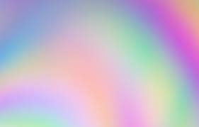

Opdracht 1
- static; volgt de standaard positioning rules en flow van html.
- relative; geeft een verschuiving aan vanaf de standaard static position.
right 20 px betekent dat je element 20 pixels naar rechts schuift.
- absolute; definieer positie t.o.v. de (relative!) container waar die in zit.
Right 20px betekent dat je element op 20px afstand van de rechter rand
van de dichtsbijzijnde RELATIVE container komt te staan.
- Fixed: geeft een positie aan je element waar het ook blijft staan.
Een menubalk kan je op deze manier altijd bovenaan je webpagina houden.
- Sticky: Combineert de standaard eigenschappen met fixed;
gebruikelijk staat het element waar het staat, maar als je naar beneden scrollt,
dan komt het sticky gedeelte into play en blijft het element daar bovenaan 'hangen'.
Opdr. 2+4 - Absolute Positionering t.o.v. html
Opdr. 3. Relatieve Positionering
Dit is een paragraaf.

Dit is opdracht 5
Dit is een paragraaf.
Dit is nog een paragraaf.
Opdracht 6